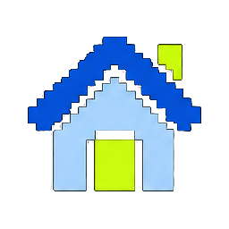
homeIC-01 · candidato16 recortes; comprobar cada icono a 24px antes de usarlos en navegación. Todavía no aprobados.

homeIC-01 · candidato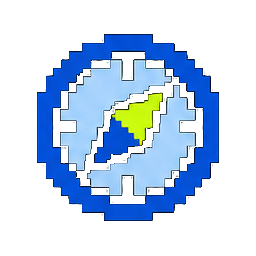
compassIC-02 · candidato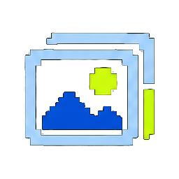
galleryIC-03 · candidato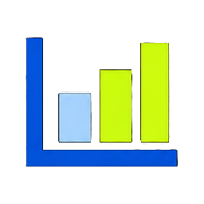
analyticsIC-05 · candidato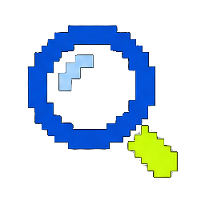
searchIC-06 · candidato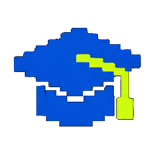
learningIC-07 · candidato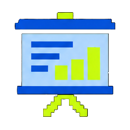
presentationIC-08 · candidato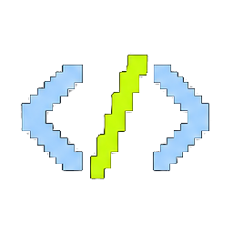
codeIC-09 · candidato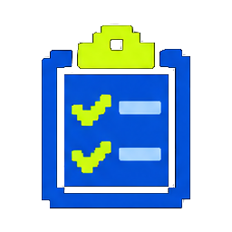
checklistIC-10 · candidato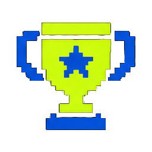
awardIC-11 · candidato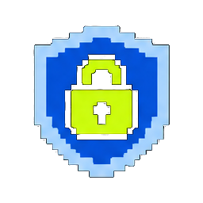
securityIC-12 · candidato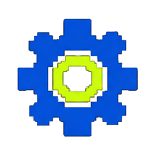
settingsIC-13 · candidato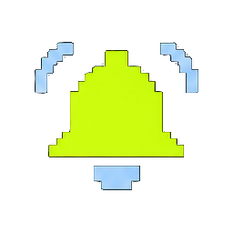
notificationIC-14 · candidato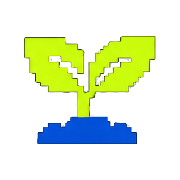
ecocampusIC-16 · candidato